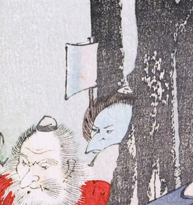

木陰からのぞく烏天狗の顔。青白く大きな嘴がある。斧を持っているようである。
著作者：秀湖／出典：親書誌：U426_nichibunken_0144：御曹子牛若丸鞍馬ニ劍法ヲ修ス；オンゾウシウシワカマルクラマニケンポウヲシュウス／日付：2009／資源識別子：U426_nichibunken_0144_0001_0006
Copyright (c)2010- International Research Center for Japanese Studies, Kyoto, Japan. All rights reserved.